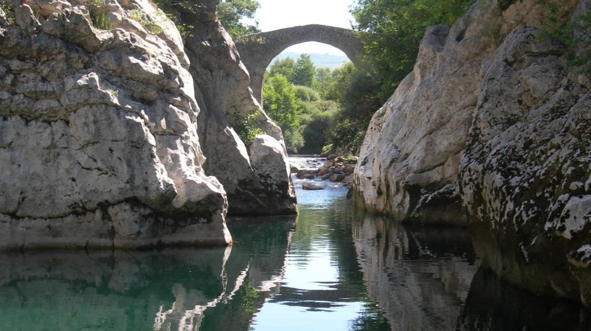
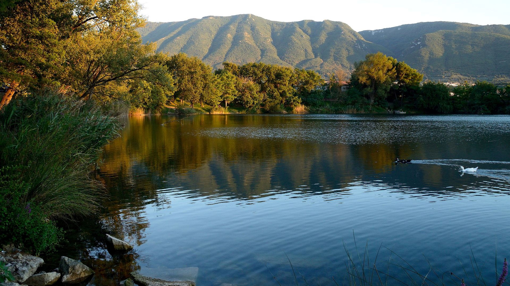
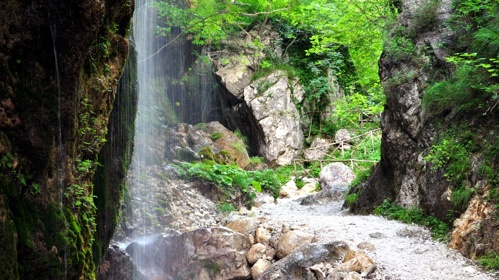
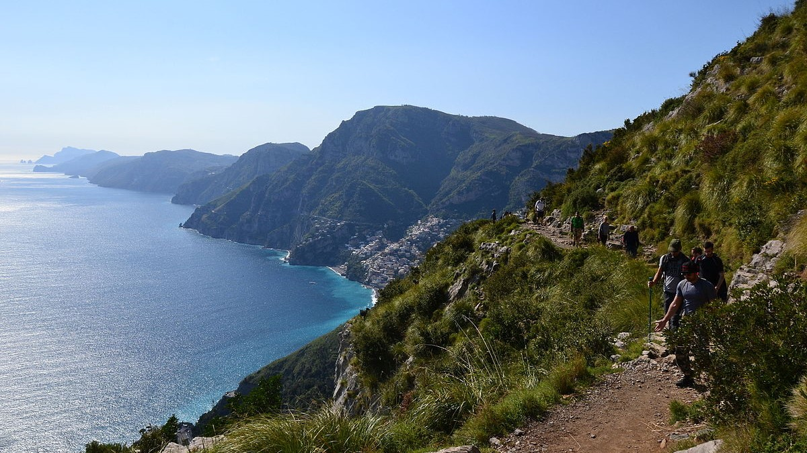
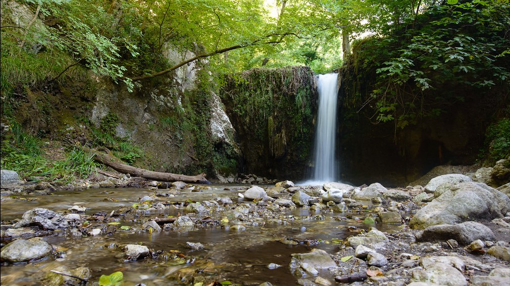

Castelcivita caves
Description
The Grotte di Castelcivita is a complex of karst cavities particularly rich in stalactites and stalagmites of a thousand shapes, with a total of about 4800 m in length, today they represent one of the largest speleological complexes in southern Italy.
They extend, in fact, for several kilometres in the massif of the Alburni Mountains, but only 1700 m are accessible to visitors.

Gole del Calore
Description
the Gole del Calore are a series of five deep engravings carved into the rock by the running waters of the Calore Lucano river. They are located in the upper part of the Valle del Calore, in the territory of the National Park of Cilento and Vallo di Diano
and are characterized by suggestive excavations with rocky walls that drop to the peak.
Read more
Italian Website

Gole di Caccaviola
Description
The gorges of Caccaviola are located in the municipality of Cusano Mutri and formed in the gap between the Civita di Cusano and Civita di Pietraroja mountains. In the gorges of Caccaviola an "adventure path" has been created through which the gorges can
be visited with the help of expert guides using harnesses connected to steel ropes fixed in the rock.
Read more
Italian Website

Telese's Lake
Description
The Telese lake is a lake basin located in the municipal area of Telese Terme, in the valley of the Calore river in the province of Benevento. Formed following the earthquake of 1349, it is of karst origin and has a circular shape, a perimeter of about
1 km and a depth between 20 and 30 meters; the surface measures approximately 49,000 square meters.
Read more
Italian Website

Mount Terminio
Description
The Terminio is one of the peaks of the Picentini mountains, and it constitutes a tourist destination both in summer and in winter. From his taller peak (1806 meters s.l.m.) the sight is pushed up to the Salernitan coasts. From the Terminio it is possible
to go down up to the so-called one “Bocca del Dragone”, an example of carsic phenomenon to 670 meters altitude, that constitutes one of the caves that carry, through the strata of the subsoil, the waters of the sources of Serino.

Oasis Valle della Caccia
Description
The natural oasis Valle della Caccia is an oasis of 450 hectares, located in the upper Sele valley. It was built in 1992. The totally mountainous area, delimited by the mountain peaks; Monte della Croce 1533 meters, Raia della Volpe 1631 meters, Monte
la Picciola 1520 meters, includes the hunting valley and the sources of the Acquabianca river.
Read more
Italian Website

Grassano Park
Description

Matese Park
Description
The Matese regional park is a protected natural area. The territory of the park mainly includes the Matese mountain massif. The highest mountains, of limestone nature, are Mount Miletto (2050 m a.s.l.), Mount Gallinola (1923 m a.s.l.) and Mount Mutria
(1823 m a.s.l.). The park takes its name from the Matese lake, while another important lake is that of Gallo with the park being crossed by two rivers: the Titerno and the Tammaro.

The Path of the Gods
Description
The Path of the Gods is a hiking trail that runs through the Lattari Mountains, winding between the Amalfi Coast and the Sorrento Coast, in the Campania Region. About 7.8 km long, it connects the locality of Bomerano (fraction of Agerola) with the locality
of Nocelle (fraction of Positano), crossing several villages on the coast and is considered among the most beautiful hiking trails in the world.
Read more
Italian Website

Trentinara
Description
From here you can see the Mediterranean. Trentinara is the terrace of Cilento, the window that, from the southern spur of Campania, overlooks the sea, allowing a wonderful, truly breathtaking view. the village offers tourists an adrenaline-pumping experience,
there is also an angel flight, to be traveled in suspension at a height of 1,586 meters and at a speed varying between 60 and 120 km / h.
Read more
Italian Website

Valle delle Ferriere
Description
The Valle delle Ferriere is a place unique to this world. It can be easily reached on foot from Amalfi in about an hour. It is nice and cool even in the height of summer thanks to the waterfalls and streams running its length. The most interesting part
is without doubt the Nature Reserve, to be found at its centre.

Mount Vesuvius
Description
Vesuvius is a somma-stratovolcano located in the Gulf of Naples, about 9 km (5.6 miles) east of Naples and a short distance from the shore. It is one of the numerous volcanoes that form the Campania volcanic arc. Vesuvius consists of a large cone partially
surrounded by the steep rim of a summit caldera caused by the collapse of a previous and originally much higher structure.